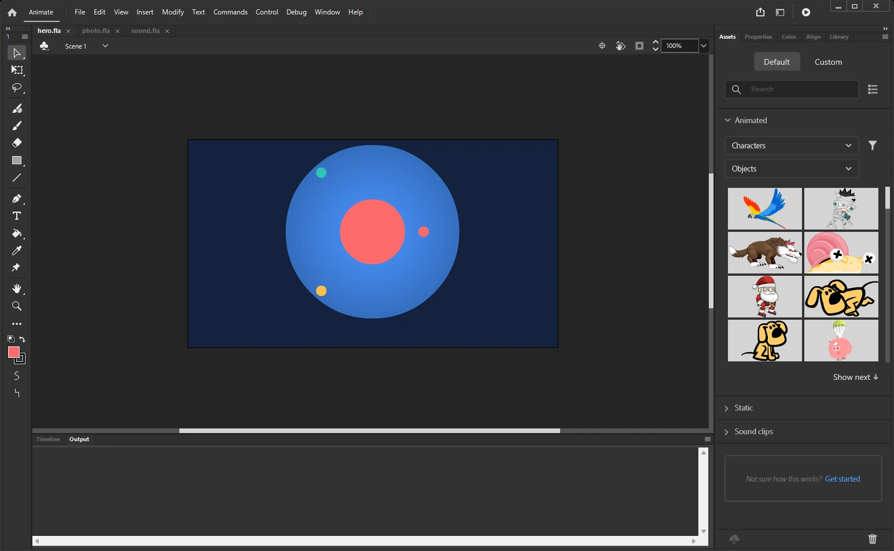

Installation
Flash2SVG is a panel (a CEP extension) for Adobe Animate 2022 or later on Windows and macOS. It is tested with Animate 2024 (24.0.x) on Windows. Animate 2024 is the current version: Adobe keeps it in maintenance, with security and bug fixes.
Download the latest release from the releases page. It has three files:
| File | What it is |
|---|---|
Flash2SVG-<version>.zxp |
The panel, signed. Install it with an extension manager (below). |
Flash2SVG-<version>.zip |
The same panel unpacked, for a manual install. |
flash2svg-cli.zip |
The command line compiler, for re-exporting without Animate. |
Install the signed ZXP
Pick one of these tools:
- Anastasiy's Extension Manager (install.anastasiy.com), free for Windows and macOS: open it, choose Animate, click Install and pick the
.zxp. - Adobe's own installer (Unified Plugin Installer Agent), which comes with the Creative Cloud app. On Windows, in a terminal:
& "C:\Program Files\Common Files\Adobe\Adobe Desktop Common\RemoteComponents\UPI\UnifiedPluginInstallerAgent\UnifiedPluginInstallerAgent.exe" /install "$HOME\Downloads\Flash2SVG-4.3.0.zxp"On macOS:
"/Library/Application Support/Adobe/Adobe Desktop Common/RemoteComponents/UPI/UnifiedPluginInstallerAgent/UnifiedPluginInstallerAgent.app/Contents/MacOS/UnifiedPluginInstallerAgent" --install ~/Downloads/Flash2SVG-4.3.0.zxp- ZXPInstaller, an open-source alternative.
Then restart Animate and open the panel: Window › Extensions › Flash2SVG (SVG Animation). It opens as a floating window; drag its tab into any dock, and Animate remembers the place.

Install the zip by hand
Unzip the archive into Adobe's extension folder, as a folder called org.flash2svg:
| System | Folder |
|---|---|
| Windows | %APPDATA%\Adobe\CEP\extensions\org.flash2svg |
| macOS | ~/Library/Application Support/Adobe/CEP/extensions/org.flash2svg |
A panel installed this way is not signed, so Animate loads it only when CEP's debug mode is on — once per machine:
reg add HKCU\Software\Adobe\CSXS.12 /v PlayerDebugMode /t REG_SZ /d 1 /fOn macOS: defaults write com.adobe.CSXS.12 PlayerDebugMode 1. Animate 2022 and 2023 use CSXS.11 instead of CSXS.12.
Update
Install the new ZXP over the old one (the extension manager replaces it) and restart Animate. Your settings stay: they are kept per user, and optionally inside each FLA (Remember settings in the FLA).
Remove it safely
Close the Flash2SVG panel and quit Animate before you remove the extension.
The command line compiler
The panel's compiler also runs in Node.js (version 24 or later) on any system: it re-exports a scene the panel extracted, with other settings, without Animate. Unpack flash2svg-cli.zip anywhere and run node flash2svg.js --help. See Command line.